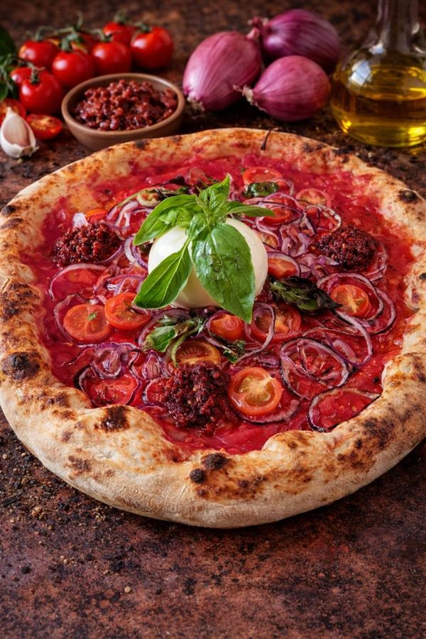
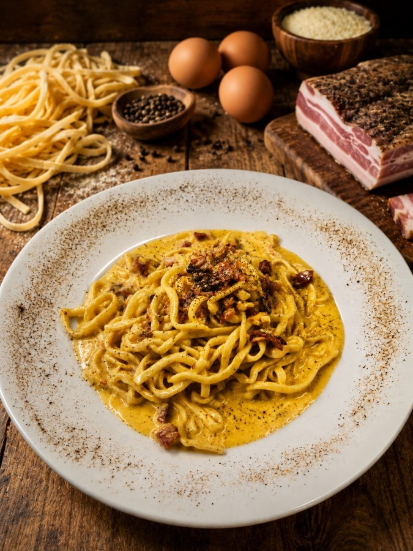
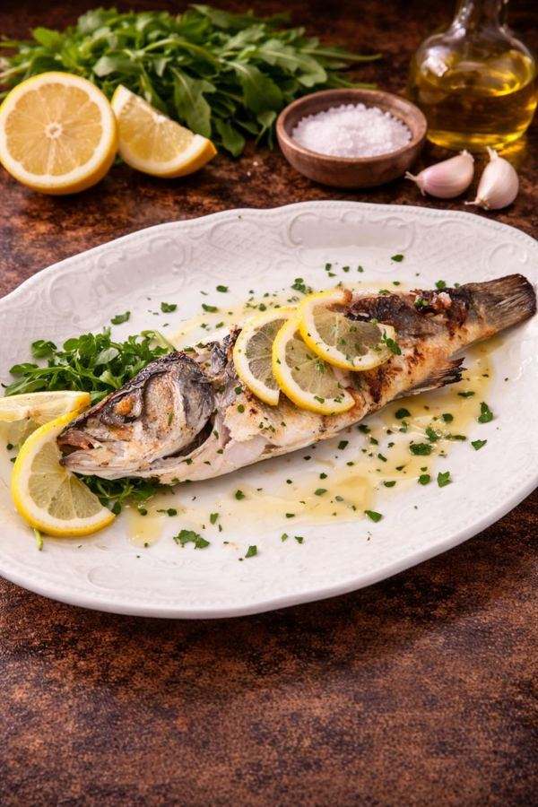

Pizza Vico
Pomodoro, mozzarella, salsiccia, friarielli, salame Napoli e ricotta
 Vico del Carmine
Vico del Carmine
Osteria pizzeria napoletana · Firenze
Pizza napoletana, pasta di mare e i piatti della tradizione, in Via Pisana a due passi da Porta San Frediano.
Il locale
Il Vico del Carmine è un pezzo di Napoli in Oltrarno: un'osteria pizzeria dove si mangia come a casa, tra pizze napoletane, primi di mare, grigliate e dolci della tradizione. Una cucina semplice e generosa, da dividere al tavolo.
Le classiche e le pizze del Vico, anche con impasti speciali.
Chitarrina allo scoglio, gnocchi alla sorrentina, tagliata e grigliate.
Si sfoglia dal telefono come un libro. Al tavolo puoi anche ordinare.
Dal nostro menu
Pomodoro, mozzarella, salsiccia, friarielli, salame Napoli e ricotta

Pomodorini ciliegino, cipolla rossa, 'nduja, burrata e basilico
Cozze, vongole, calamari, canocchie e gamberetti

Guanciale affumicato, uovo, pecorino e pepe nero

Spigola o orata, cotta alla griglia
Controfiletto di manzo al vino Chianti
Prenotazioni
Scegli la sera e l'ora in cui arrivate: la conferma arriva subito.
Asporto
Scegli i piatti dal menu e l'ora di ritiro di stasera: quando arrivi è pronto, e paghi al ritiro.
Club del Vico
Iscriversi è gratis. Alla tua prossima visita ti aspetta un omaggio, e per il compleanno un regalo da festeggiare con gli amici.
Entri prenotando un tavolo qui sopra, oppure dal menu toccando il regalo 🎁 in alto a sinistra.
Apri il menuDove siamo
Appena fuori Porta San Frediano, in Oltrarno.
| lunedì | 19:00 – 00:30 |
|---|---|
| martedì | 19:00 – 00:30 |
| mercoledì | 19:00 – 00:30 |
| giovedì | 19:00 – 00:30 |
| venerdì | 19:00 – 00:30 |
| sabato | 19:00 – 00:30 |
| domenica | 19:00 – 00:30 |
Dagli stessi titolari
La nostra braceria pizzeria: carne alla brace e pizza cotta a legna.